Model-free annotation
Differential rendering of 307K native Word documents across 82 languages gives layout, text and component labels from rendering differences alone.
Multilingual Document Understanding Across 80+ Languages
OCR training data and a benchmark for 82 languages, annotated by differential rendering of the documents themselves instead of by models.
Multilingual document understanding remains limited for low-resource languages: training data is scarce, and model-based annotation pipelines pass the biases of existing models on to the next ones.
DocAtlas extracts ground truth directly from document sources. Two pipelines, differential rendering of native Word documents and LaTeX-based synthesis for right-to-left scripts, produce structural annotations in a unified DocTag format that encodes layout, text and component types, without learned models for the core annotation. The result is a 360K-page training corpus and a difficulty-stratified benchmark of 5,862 pages across 82 languages and 9 tasks.
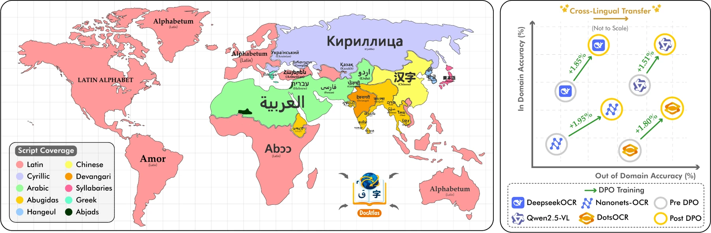
Differential rendering of 307K native Word documents across 82 languages gives layout, text and component labels from rendering differences alone.
A LaTeX-based synthetic pipeline adds 52K precisely annotated pages in Arabic, Hebrew, Urdu and Persian.
5.8K difficulty-stratified pages across 82 languages and 9 tasks, with 14 state-of-the-art models evaluated under unified metrics.
In-domain accuracy improves by 1.9% and out-of-domain by 1.8%, where supervised fine-tuning degrades out-of-domain performance by up to 21%.
Each component of a Word document is tinted through its styling attributes. The document is rendered twice, with and without the tint, and the two renderings are subtracted pixel by pixel. What remains are per-category regions, which contour analysis turns into bounding boxes.
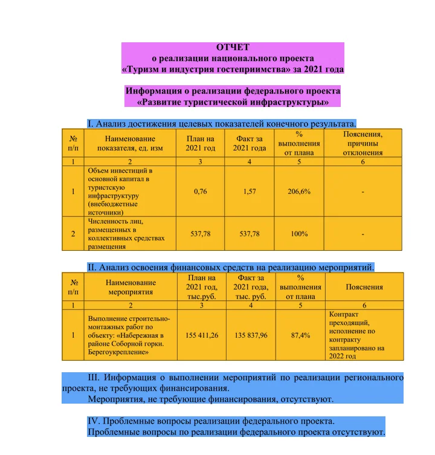
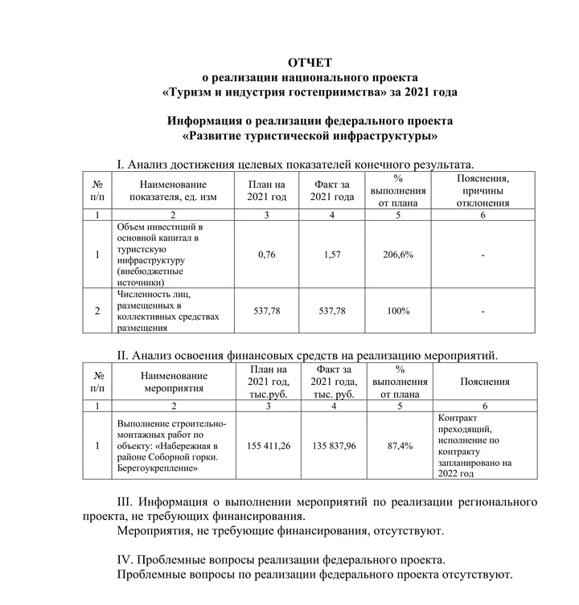
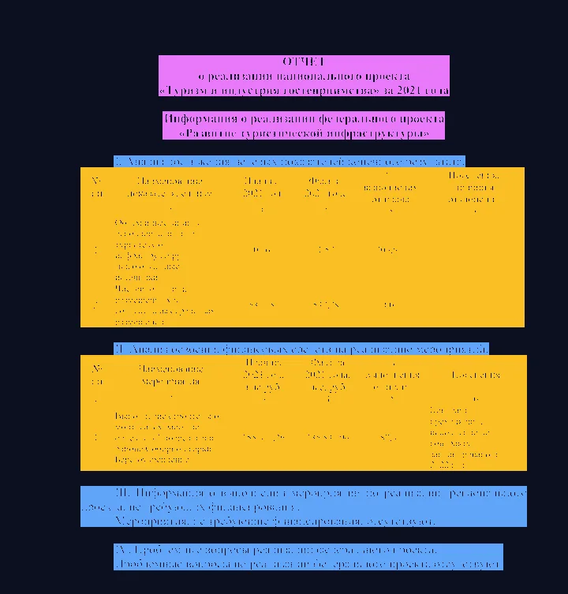
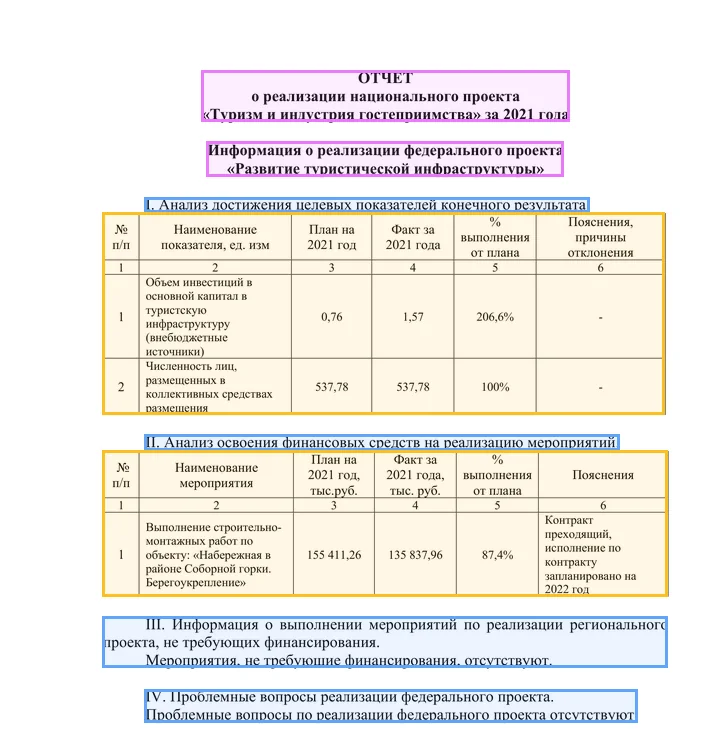
Illustration on a page of the benchmark, drawn from its annotations.
.doc/.docx URLs come from Common Crawl. They are deduplicated, downloaded and filtered for unsafe or corrupted files.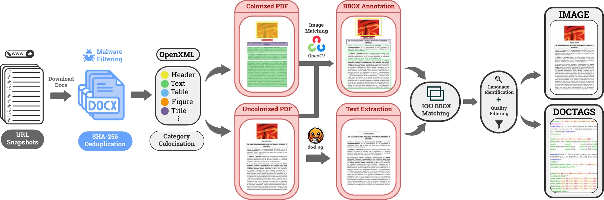
PDF parsers fail on bidirectional text, so right-to-left scripts are synthesized instead. Structured inputs (EPUB, HTML, XML) are parsed into a Docling JSON schema and rendered through 205 LuaTeX templates for Arabic, Hebrew, Urdu and Persian. Custom LaTeX commands log the position of every element over three compilation passes, which recovers exact bounding boxes.
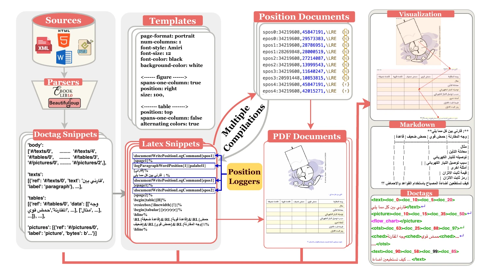
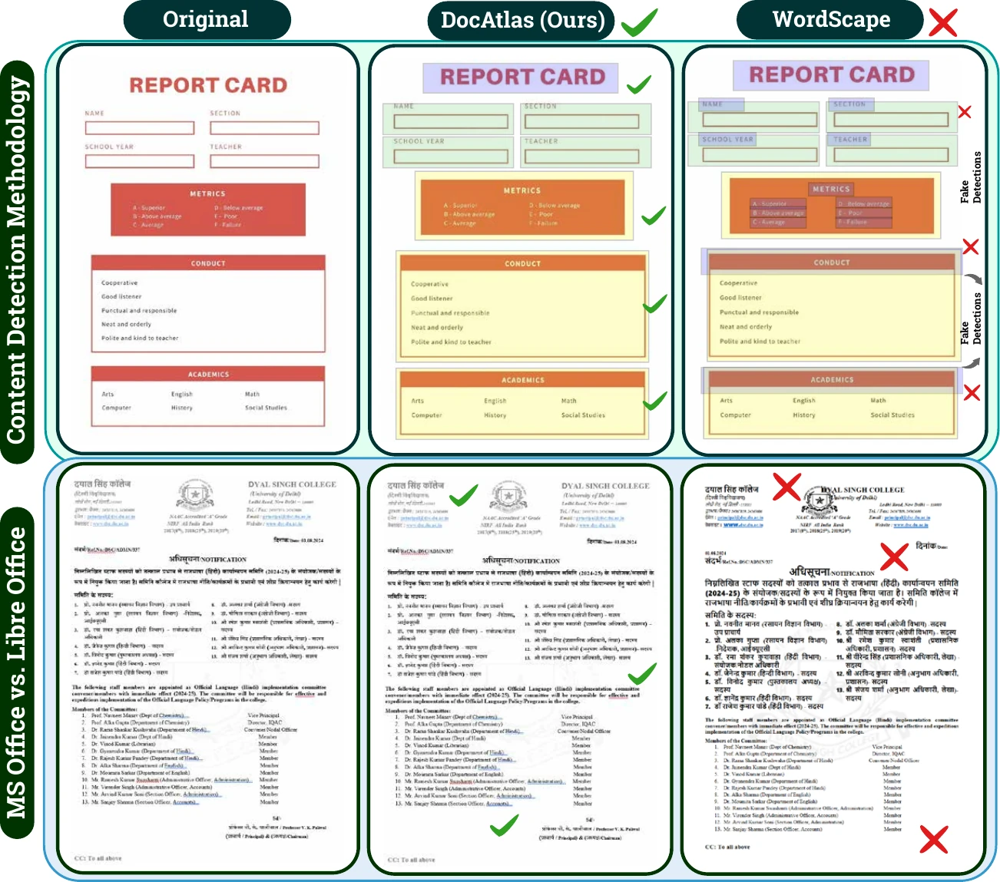
The raw collection spans 5.48M pages across 136 languages from Common Crawl, under permissive licenses. Quality filtering and difficulty-aware sampling keep 360K training pages in 82 languages and more than 25 content domains.
Automated PII detection removed 5.15% of the documents initially collected.
| Dataset | Samples | Languages | Annotation | Tasks | Model-free |
|---|---|---|---|---|---|
| FUNSD | 199 | 1 | Manual | 1 | |
| XFUND | 1.3K | 7 | Manual | 2 | |
| PubLayNet | 361K | 1 | Rule-based | 3 | |
| DocLayNet | 81K | 4 | Manual | 4 | |
| DocBank | 500K | 1 | Model-based | 3 | |
| SynthTIGER | 10M | 1 | Rule-based | 1 | |
| WordScape | 9.5M | 136 | Colorization | 3 | |
| DIT700K | 700K | 1 | Layout detector | 3 | |
| DocAtlas | 360K | 82 | Differential rendering | 9 |
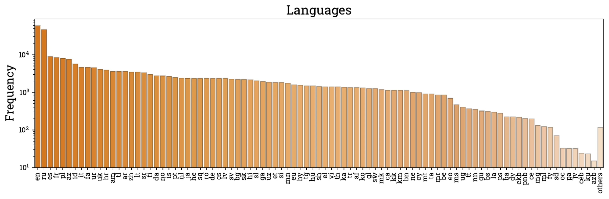
en, ru and es form the head; low-resource languages such as ps, ckb, ku and azb form a long tail.Pages are embedded with ResNet-50 features, clustered with FAISS and stratified into equal easy, medium and hard splits, with up to 100 pages per language. The 5,575 page-level samples are complemented by 144 curated formula samples and chart data in 15 languages.
| Benchmark | Year | Languages | End-to-end | Reading order | Text | Table | Formula | Chart |
|---|
Twelve pages in nine scripts. Hover over a region to see its DocTag; switch the right panel between the ground-truth Markdown and the raw DocTags.
Text recognition (edit distance), table structure (TEDS), formula transcription and reading order on the multilingual benchmark. Overall is the average of text accuracy and table TEDS. Click a column to sort.
| # | Method | Params | Text Edit ↓ | Table TEDS ↑ | Formula Edit ↓ | Read Order Edit ↓ | Overall ↑ |
|---|
High-resource languages stay at 80–95% accuracy with narrow variance. Low-resource scripts range from 20% to 85%, and their median is often below 40%. Training data availability decides multilingual robustness more than architecture does.
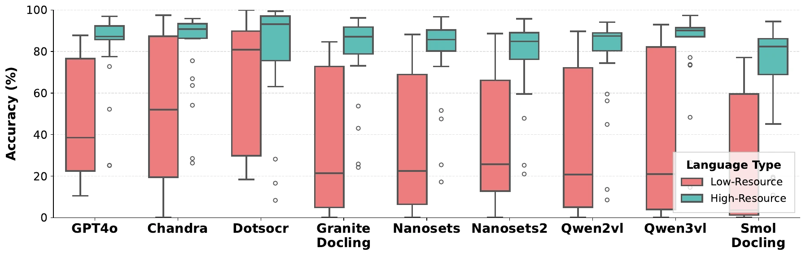
Text recognition is far ahead of structured extraction. The best systems reach text edit distances of 0.068–0.095, while table TEDS plateaus at 71–73% whatever the language. Spatial reasoning over layouts is the main bottleneck.
Each point is a system of the leaderboard. Text accuracy is 100 × (1 − text edit distance).
Indo-European and Cyrillic scripts reach 80–87% accuracy. Japonic languages range from 26.9% to 70.5%, and even the top models struggle on Austroasiatic languages. Top models such as DeepseekOCR and Chandra are consistent; others degrade on low-resource scripts.
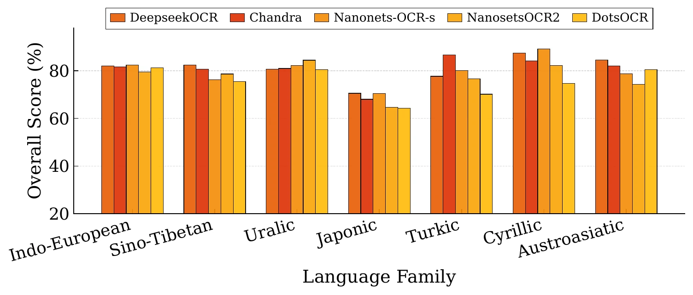
Gemini-2.5-Flash has the highest average chart score (61.82%) and is consistent across languages. Expert OCR models degrade sharply by language: DeepseekOCR scores 87% on English but 8–17% on Thai, Arabic and Italian.
Mean score per chart type (Table 4 of the paper).
Formatting (14.6%), character encoding (13.2%) and content omission (13.2%) are among the most frequent.
The same models fall to 30–45% on newspapers and magazines, where dense multi-column layouts break learned priors.
Several compact expert systems match or exceed general-purpose VLMs on both text and table scores.
Three strategies are compared for extending OCR models to new languages: full-page supervised fine-tuning, component-level fine-tuning, and Direct Preference Optimization, which prefers the rendering-derived ground truth over the base model's own prediction.
In: trained languages. Out: unseen languages. Table 6 of the paper.
Change in table TEDS against the baseline (71.5) for full fine-tuning and five LoRA variants. Training only QKV gains on new languages without losing on base languages. Table 5 of the paper.
DPO on DeepseekOCR. GPT-4o distillation hurts out-of-domain transfer; rendering-derived ground truth improves both. Table 7 of the paper.
Sino-Tibetan, Japonic and Austroasiatic languages gain the most from DPO training, up to 40% on text for Sino-Tibetan. Indo-European and Uralic languages gain less than 5%, and Cyrillic gains are skewed toward tables.
DPO-trained models also generalize beyond digital-native sources. On DocPTBench and OmniDocBench, DocAtlas-DeepSeek reduces edit distance from 22.1% to 20.7% and from 0.137 to 0.122 over the DeepseekOCR baseline.
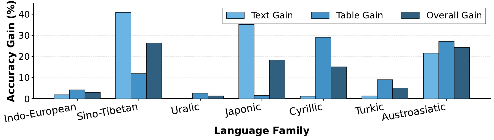
A model converts each page image to Markdown. The output is scored for text (edit distance), tables (TEDS) and reading order (edit distance).
# the task lives in lmms-eval: lmms_eval/tasks/docatlas_bench
pip install git+https://github.com/EvolvingLMMs-Lab/lmms-eval.git
pip install beautifulsoup4 func-timeout lxml pylatexenc scipy
python -m lmms_eval --model <model> --tasks docatlas_bench --batch_size 1
@article{heakl2026docatlas,
title={DocAtlas: Multilingual Document Understanding Across 80+ Languages},
author={Heakl, Ahmed and Mohamed, Youssef and Sohail, Abdullah and Elbadry, Rania and Nassar, Ahmed and Staar, Peter WJ and Khan, Fahad Shahbaz and Razzak, Imran and Khan, Salman},
journal={arXiv preprint arXiv:2605.12623},
year={2026}
}